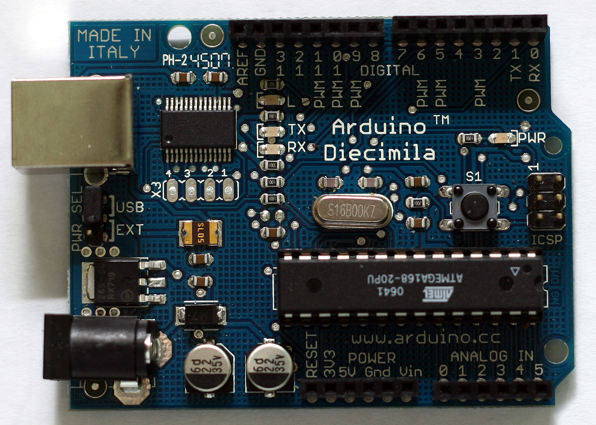
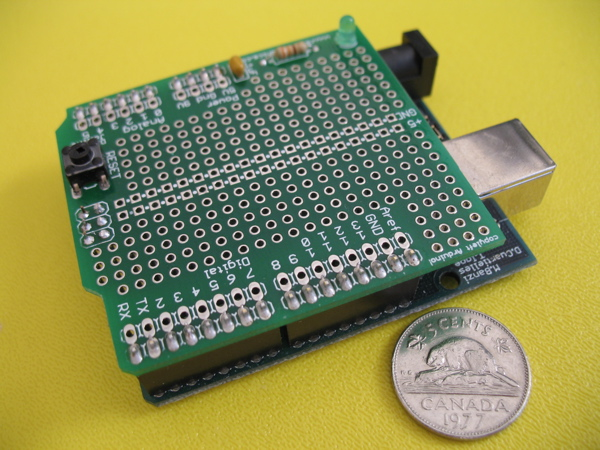

| História | Aplicações | Hardware Oficial | Clones | |||||||||||||||||||||||||||||||||||||||||||||
HARDWARE OFICIAL
 Arduino Diecimila O Arduino original é fabricado pela companhia italiana Smart Projects, porém a estadunidense SparkFun Electronics também possui algumas marcas comerciais sob a mesma licença. Foram produzidas comercialmente 13 versões do dispositivo:
1. DISTRIBUIDORES OFICIAIS ARDUINOHoje, no mundo, existem mais de 300 distribuidores oficiais do Arduino espalhados por todos os continentes, no entanto, aproximadamente 80% da produção e audiência estão dividas entre Estados Unidos da América e o Continente Europeu, sendo o restante de 20% espalhados pelas demais partes do mundo. Uma pequena minoria está distribuída em mercados emergentes, como Índia, China e América do Sul, sendo um alvo que a empresa vem trabalhando para atingir, é o que afirma Gianluca Martino, membro da Equipe Arduino e responsável pela supervisão e distribuição do microcontrolador. No Brasil existem atualmente 3 distribuidores oficiais, os quais podem ser consultados diretamente no site Arduino, sendo eles: Multilogica, Oderco Distribudora e RoboCore. Essa lista não é restrita, pois diversos fornecedores iniciam e encerram parcerias com a empresa Copyright de Arduino SA, estando autorizados legalmente a comercializar os seus produtos, os quais obedecem altos padrões de qualidade, além de suas vendas contribuírem com a manutenção e desenvolvimento de materiais para os clientes e simpatizantes da placa Arduino no site Oficial. Massimo Banzi (um dos criadores do Arduino), afirma que as placas Arduino Originais possuem uma série de vantagens em relação aos modelos falsificados (que utilizam ilegalmente a marca e a logo) vendidos em larga escala em mercados internacionais, apresentando alto padrão de qualidade e acabamento em sua produção, além de contar com documentação atualizada no site oficial, garantia e suporte técnico para o utilizador, incluindo diversas outras vantagens que somente a placa original oferece. 2. LICENÇAS DE HARDWARE E SOFTWAREOs projetos e esquemas de hardwares são distribuídos sob a licença Creative Commons Attribution Share-Alike 2.5, e estão disponíveis em sua página oficial. Arquivos de layout e produção para algumas versões também estão hospedadas. A código fonte para o IDE e a biblioteca de funções da placa são disponibilizadas sob a licença GPLv2 e hospedadas pelo projeto Google Code. 3. ACESSÓRIOS Um shield de prototipagem, montado num Arduino O Arduino e seus clones fazem uso de shields (escudos, em inglês): placas de circuito impresso normalmente fixadas no topo do aparelho através de uma conexão alimentada por pinos-conectores. São expansões que disponibilizam várias funções específicas, desde a manipulação de motores até sistemas de rede sem fio. Exemplos:
Nota: as especificações são apresentadas em língua inglesa. |
||||||||||||||||||||||||||||||||||||||||||||||||
| Fonte: Arduino no Wikipedia | Ligações Externas: Página Principal do Arduino [em inglês] - Wiki Arduino [em inglês] | ||||||||||||||||||||||||||||||||||||||||||||||||